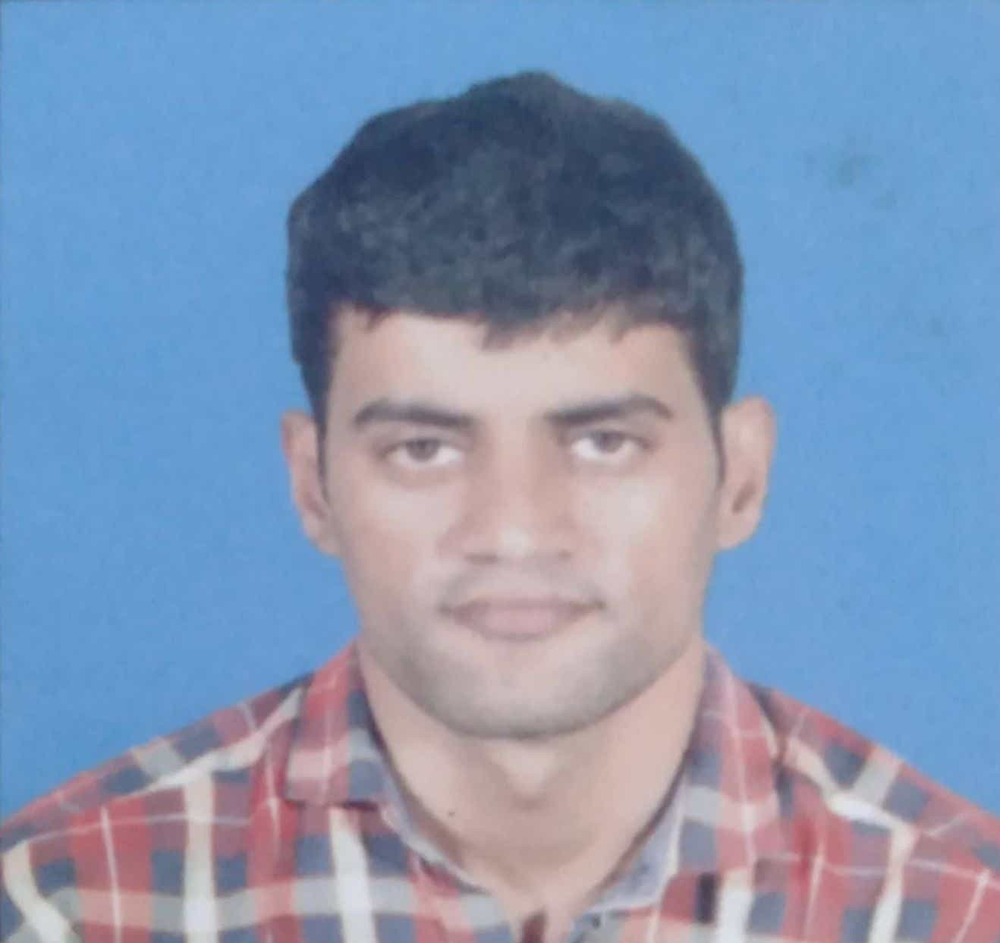

|  |
Nagarjuna Mandatiiam student iam complete Mca in 2021 at St Ann's college of engineering and technology my name is nagarjuna reddy iam come for markapur andhra pradesh prakasam district-523316 |
| Qualification | Y.O.P | college name / school name | percentage |
|---|---|---|---|
| M.C.A | 2021 | St.Ann's college of engineering and technology chirala | 70 |
| Bsc computer science | 2018 | Chaitanya Bharathi degree college | 62 |
| intermediate | 2014 | vignana Bharathi junior college | 45.30 |
| S.S.C | 2011 | Dittakavi english medium school | 59.00 |
| Java | ★★★ | Python | ★★★★★ | Front-End technologies | ★★★★★ |
Driver Drowsiness Detection Using Opencv and face recognition
Now, a days drowsy is is one of the major causes for most of the accidents.The simple method for identifying drowsiness is detecting driver eye tiredness I detect the sleep of the driver and alert the using alarm.Using Camera face is detected with the help of face detection.the main objective is the eye ball is monitoring for the fatigue detection.
Python with Deep Learning
Contact ME:-